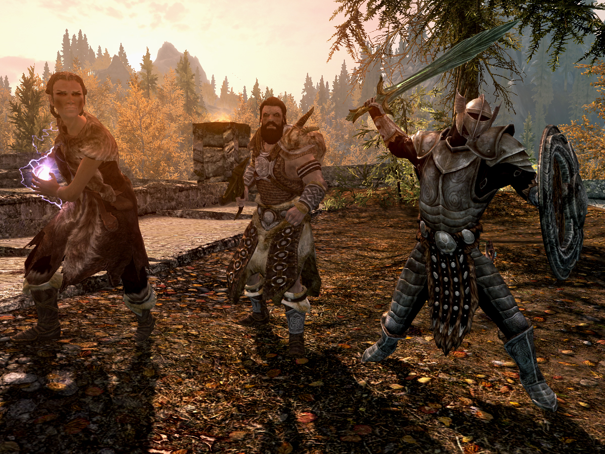

Wait. I know you.
My cousin's out fighting dragons, and what do I get? Guard duty.
How do you do, Thane.
I'd be a lot warmer and a lot happier with a bellyful of mead.
No lollygaggin'.
I mostly deal with petty thievery and drunken brawls. Been too long since we had a good bandit raid.
They say Helgen got hit by a dragon. One of those horrors comes here, we'll be ready.
Disrespect the law, and you disrespect me.
Citizen.
Could sure use a warm bed right about now.
Watch the skies, traveler.
A fine day to you, friend. May you die with a sword in your hand.
You've been a good friend to me. That means something.
We're one of the same kind, you and I. I'm glad to have met you.
May the gods watch over your battles, friend.
I've got your back.
Ours is to smile at your passing, friend.
These sands are cold, but Khajiit feels warmness from your presence.
Azura's wisdom to you, friend.
I can always count on you, can't I.

"Ulfric Stormcloak. Some here in Helgen call you a hero, but a hero doesn't use a power like the Voice to murder his King and usurp his throne. You started this war, plunged Skyrim into chaos, and now the Empire is going to put you down, and restore the peace."
Never should have come here!
You picked a bad time to get lost, friend.
Retire some day... get myself an island.
Mead, mead, mead... kill him to get some beer every now and then? Stupid bees and their stupid honey.
Die already so I can take your stuff!
Might pay off my bounty this time. Walk into the city a free man.
Lookee here. Looks like we got ourselves a hero.
Can't wait to count out your coin.
You'll be so much easier to rob when you're dead!
'Go to the college,' da said. 'Use your smarts,' he said. Like I'm supposed to figure out which college he meant!
Tell you what. You start running, so I can stab you in the back.
Told him to just hand over the gold, but did he listen? Oh, no. They always have to fight back.